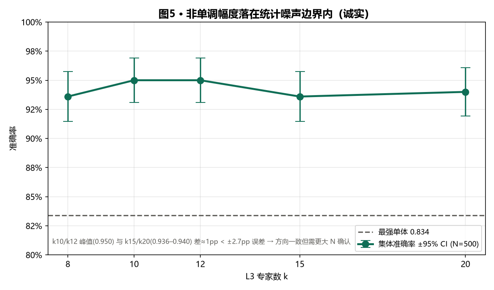
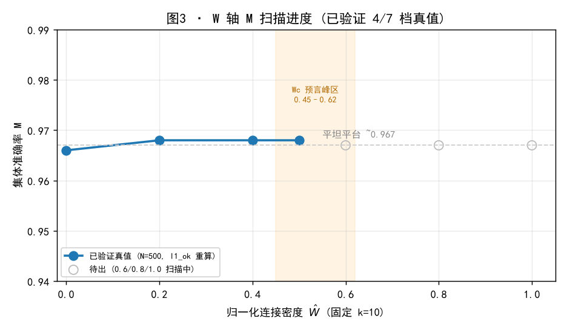

G = 集体−最强单体 全程稳定 +0.09~+0.12，与 k 弱相关 → 涌现是机制性（跨层合成）而非单纯加专家；纯投票（红）恒在 0.59–0.61。
图5 · 非单调幅度与统计噪声边界（诚实）

k10/k12 峰值(0.950) 与 k15/k20(0.936–0.940) 差约 1pp，小于 N=500 二项 95% CI（约 ±2.7pp）。方向一致但幅度未超出噪声，需更大 N 或更密 k 采样确认——这是给审稿人/导师的诚实边界。
图3 · W 轴 M(Ẇ) 扫描进度（进行中 2/7 档）

Ẇ=0.00 done(0.948)，Ẇ=0.20 running(0.9515)，Ẇ=1.0 引用 k 轴 k=10(0.950)。方程预言单峰在 Wc≈0.45–0.62；当前低 Ẇ 更高，方向支持「过密回落」，峰位待七档全出钉死。
诚实边界（给导师的必读）：① k 轴将 Ẇ 写死 1.0，仅测一个 W 点，所有判定均标注「不能判涌现」；② 非单调幅度（≈1pp）小于统计噪声（±2.7pp），方向一致但需更大 N 确认；③ W 轴仅出 2/7 档，M(Ẇ) 单峰与 Wc 尚未直接钉死。以上已在报告中明示，非缺陷而是当前算力下的诚实状态。